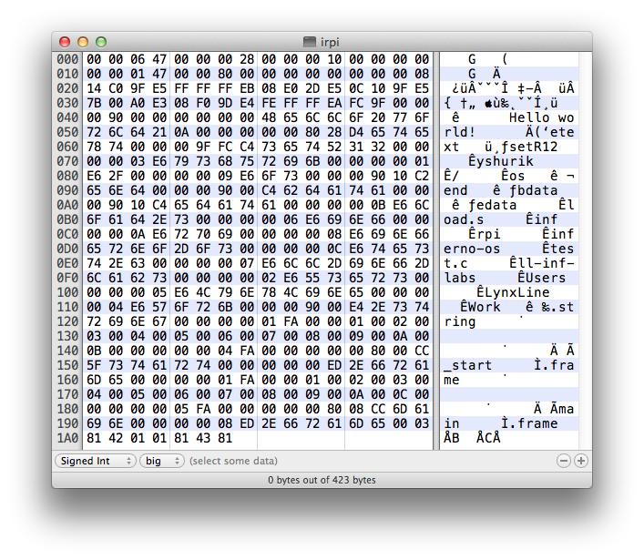
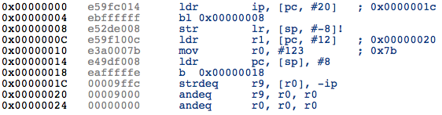
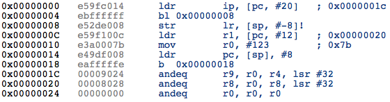

Time to study the way how we place our kernel into the memory on R-Pi. U-Boot have usually convention to place loaded binaries at 0x8000 (32KB) and just pass control there. So, let’s compile trivial program and study generated binary to understand the way how we can operate with it.
In Lab 1 we found a way of making ARM executables. Check what actually the file is:
$ file test
test: Plan 9 executable, ARM 7-something
By checking Plan 9 a.out format document we will find that it has 32 bytes header and following TEXT section. To have U-Boot passing control just to TEXT section we may load kernel into address 0x8000-0x20 = 0x7fe0, and then by “go 8000” we jump just to first byte/command in TEXT section. Also we need all addresses of routines to have the base of 0x8000. Manual http://man.cat-v.org/plan_9/1/2l gives us a way to do this by “-T” command line option.
To have specific code at 0x8000 we will created some ASM file with a loader which just call main routine. (we may take example from ARM native ports, see l.s file). Plus we use “-l” option to linker (see link to manual above) load.s:
TEXT _start(SB), 1, $-4
MOVW $setR12(SB), R12 /* static base (SB) */
BL ,main(SB)
We need to be sure about DATA section to be addressed in right way. Let’s compile this small exe and study in hex editor and disassembler.
test.c:
int main() {
char * s = "Hello world!\n";
return 123;
}
$ 5a load.s
$ 5c test.c
$ 5l -l -o irpi -T0x8000 load.5 test.5
We got just 423 bytes executable “irpi”:

Let’s copy bytes 0x20-0x48 (skip 0x20 plan9 header and until the “Hello world!”) to online disassembler to see what’s there:

We see that in line “ldr r1, [pc, #12] ; 0x00000020” it would initialize R1 with address located at 0x20 (disassembler shows TEXT started at 0x0, so in irpi file it is 0x20+0x20). Oops, this memory cell have reference to “0x9000”, which is not we expected, our “Hello world!” will be located at 0x8000+0x28.
So, let’s again check linker options and find “-Rr The text segment is rounded to a multiple of r”. Looks like by default it is aligned by 0x1000. Because it is ARM, then everything is aligned by 4 bytes, we just pass “-R4”:
$ 5l -l -o irpi -T0x8000 -R4 load.5 test.5
Now check again with disassembler, and yes:

We see 0x8028 address.
So now we are ready to load our kernel/binary with U-Boot at 0x7fe0, pass control to 0x8000 and expect that all addresses/references will work as expected.
FILES: